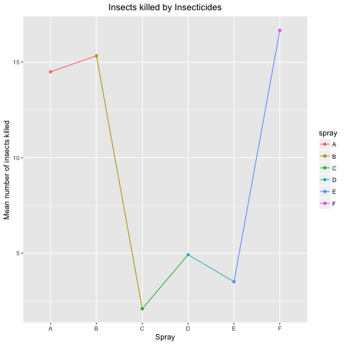

Split-Apply-Combine
##The Split-Apply-Combine Strategy
In base R there are split, lapply, mapply, rbind, and cbind functions that support the split-apply-combine strategy. The split function is used to split the data; lapply, mapply, and tapply to apply a particular function to the data; rbind and cbind to combine the processed data on the basis of rows and columns respectively. In my opinion, these functions are not sufficient. These functions only take the input data in the form of matrixes and vectors. If the working data is of high dimensions, ragged, irregular, or incomplete then these methods will have problems. For these type of datasets, data frame is the right choice for storing the data. Due to these issues, many other packages has been developed including plyr, dplyr, and data.table which have effective and efficient split-combine-apply functions. These packages can take data in any format including data frames, vectors, and lists thus making data handling very easy and effective.
We can use the InsectSprays dataset in base R. This dataset consists of the count of the insects in agricultural experimental units treated with different insecticides. Now, we can apply the split-apply-combine strategy to get the mean of the number of insects killed by each insecticide. In this, first, we will split the data on the basis of the type of the insecticide. After, that we will apply the mean function to the insecticide groups. Then, after applying the function we will combine the data and then plot the mean number of insects killed by each insecticide. As shown in the code below the split-apply-combine is being done by a single function ddply in plyr. It takes a dataframe input, split it, apply the specified function and summarize the results.
library("tidyverse")
library("plyr")
data("InsectSprays")
insectMean <- InsectSprays %>% ddply("spray", summarize, mean = mean(count))
insectMean %>% ggplot(aes(x = spray, y = mean, group = 1, colour = spray)) +
geom_line() + geom_point() + labs(x = "Spray", y = "Mean number of insects killed",
title = "Insects killed by Insecticides") + theme(plot.title = element_text(hjust = 0.5))